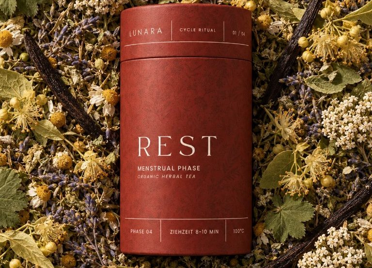
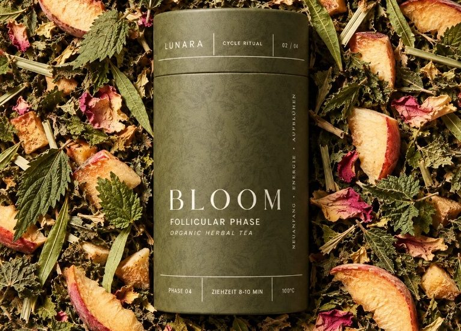
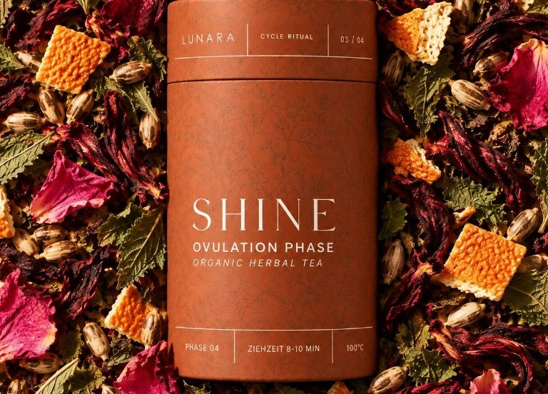
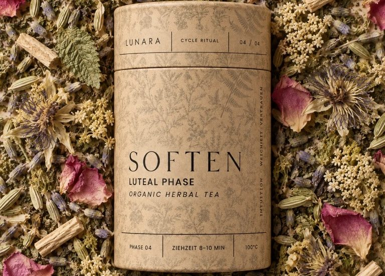
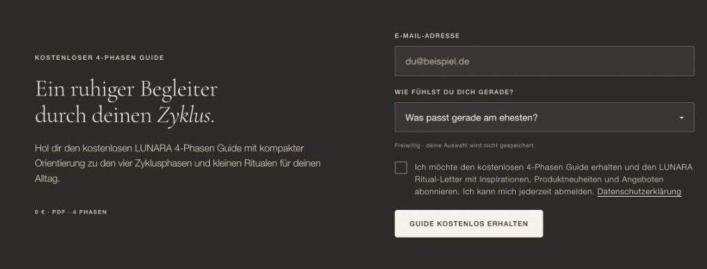
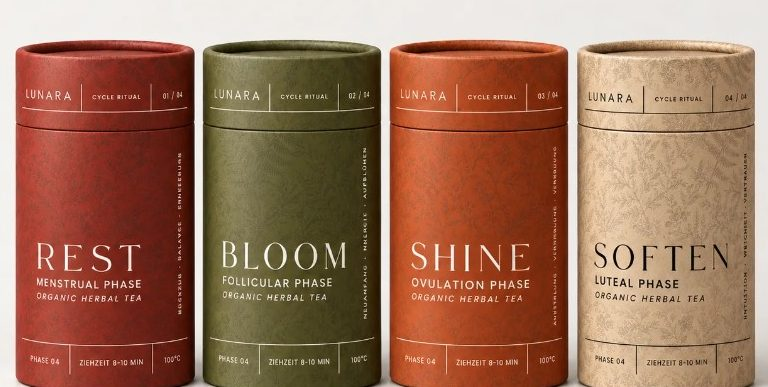
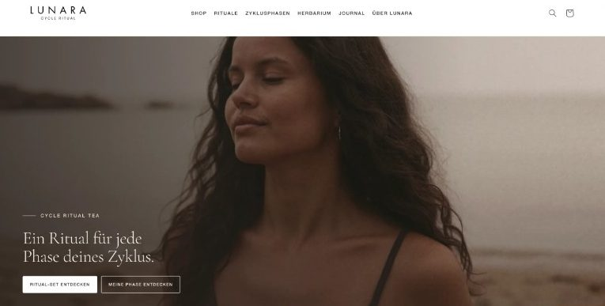
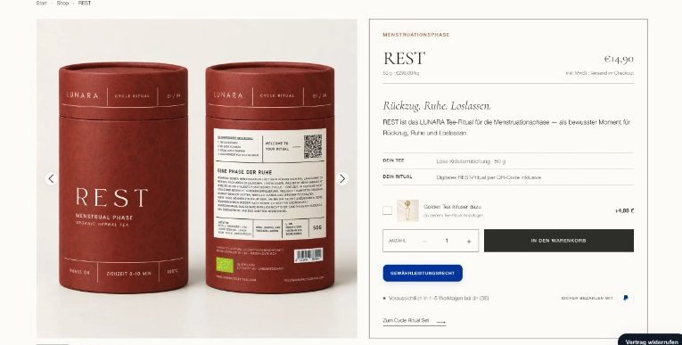

Fundament
- Gründung der UG mit zwei Geschäftsführern
- Sourcing, Lieferanten, Preis und Marge
- Rezepturentwicklung in festen Freigabeschleifen
- Rechtstexte, Versand, Widerruf und Buchhaltung angebunden
Tee-Rituale für die vier Phasen des Zyklus. Gemeinsam mit meiner Lebenspartnerin habe ich LUNARA gegründet und von der Idee bis zum fertigen Shop selbst aufgebaut.
Die Idee
Vier Phasen. Ein Zyklus. Ein Ritual.
Der Zyklus verläuft in vier Phasen, und jede fühlt sich anders an. LUNARA gibt jeder Phase ein eigenes Tee-Ritual: eine Kräutermischung, ein Name, eine Stimmung und digitale Ritual-Inhalte, die man über einen QR-Code auf der Verpackung öffnet.
Wichtig war uns von Anfang an ein ehrlicher Ton. LUNARA verkauft Genuss und bewusste Momente, keine Heilversprechen.

MenstruationsphaseRESTRückzug. Ruhe. Loslassen.Frauenmantel, Kamille, Lindenblüten, Vanille
FollikelphaseBLOOMNeuanfang. Leichtigkeit. Aufblühen.Brennnessel, Himbeerblatt, Zitronenverbene, weißer Pfirsich
EisprungphaseSHINEStrahlen. Offenheit. Verbindung.Pfefferminze, Orangenschalen, Rosenblüten, Hibiskus
LutealphaseSOFTENInnehalten. Weichheit. Vertrauen.Melisse, Passionsblume, Rosenblüten, LavendelWas ich gemacht habe
Customer Journey
Ich habe LUNARA nicht als einzelne Kanäle gedacht, sondern als durchgehende Strecke. Jeder Schritt bereitet den nächsten vor, damit aus einem ersten Kontakt eine wiederkehrende Kundin wird.
„LUNARA ist für mich kein einzelnes Marketingprojekt, sondern der Aufbau eines kompletten Markensystems.“
Sortiment
| Produkt | Art | Preis |
|---|---|---|
| REST, BLOOM, SHINE, SOFTEN | Cycle Ritual Tea, je eine Phase | je 14,90 € |
| Cycle Ritual Bundle | Alle vier Tee-Rituale | 54,90 € |
| Zyklus-Kochbuch | Digitaler Guide mit 16 Rezepten | 6,99 € |
| Golden Tea Infuser | Teezubehör | 4,99 € |
| 4-Phasen-Guide | Kostenlos bei Anmeldung | 0,00 € |




Stand heute
Als Nächstes geplant sind Erlebnisse vor Ort: Kooperationen mit Yoga-Studios, Frauenkreise, Retreats und Tee-Rituale zum Probieren. Jedes Event ist dabei ein Touchpoint, der online weitergeht, vom QR-Code über den Phasen-Guide bis zum Newsletter.